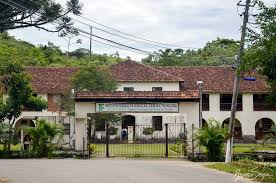
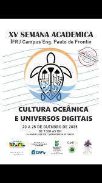

Sobre o Campus
O Instituto Federal do Rio de Janeiro (IFRJ) – Campus Engenheiro Paulo de Frontin, localizado na Av. Maria Luiza, s/nº, Sacra Família do Tinguá (RJ), atende à região Centro-Sul Fluminense com uma proposta de educação profissional, tecnológica e superior. O campus trabalha com a tríade Ensino – Pesquisa – Extensão, conectando a formação dos alunos com demandas regionais, o mercado e a inovação.
Cursos Oferecidos
- Tecnólogo em Jogos Digitais (CST) – curso superior com nota máxima (5) na avaliação do MEC.
- Pós-graduação EAD em Docência para a Educação Profissional e Tecnológica.
- Cursos técnicos e de extensão nas áreas de TI e Internet.
Diferenciais do Campus
- Excelência acadêmica: curso de Jogos Digitais com nota máxima no MEC.
- Foco em tecnologia e inovação: incentivo ao empreendedorismo e incubação de ideias.
- Atuação comunitária: projetos voltados à integração regional.
- Acessibilidade e flexibilidade: cursos presenciais e EAD.
Fonte da imagem: Google Imagens

Fonte da imagem: Google Imagens

Fonte da imagem: Google Imagens
Para Quem é Indicado
O campus é ideal para estudantes interessados em tecnologia, jogos digitais, design e programação, que buscam uma formação prática e inovadora, com foco em empreendedorismo e inserção no mercado de TI.
Considerações Finais
Vale a pena visitar o campus e conhecer sua estrutura, conversar com alunos e professores e explorar os projetos em andamento. O curso de Jogos Digitais, com nota máxima no MEC, reforça a qualidade do ensino oferecido.